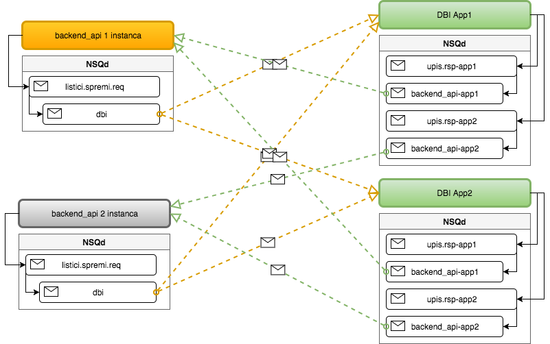

@igor: A jel znaš ti kako radi NSQ?
by Quille and friends
New Simple Queue
A realtime distributed messaging platform
Dokumentacija http://nsq.io/overview/design.html
Source https://github.com/nsqio/nsq
Dokumentacija http://nsq.io/components/nsqd.html
prima poruke od producera, isporučuje subscriber-u
kreira Topic-e i Channele na zahtjev klijenta
može raditi standalone ili u cluster-u s nsqlookup-om
kad je u cluster-u oglašava topic-e i channel-e nsqlookup-u
preporučeno je pokrenuti jednu instancu po serveru s producerima
Dokumentacija http://nsq.io/components/nsqlookupd.html
nsqd oglašava topic-e i channel-e na nsqlookupd-u
klijenti pronalaze nsqd-ove s topic-ima i channel-ima pomoću nsqlookupd-a
nsqd oglašava topic-e i channel-e na nsqlookupd-u
preporučeno je pokrenuti više instanci u datacentru
Dokumentacija http://nsq.io/components/nsqadmin.html
prikuplja informacije sa nsqlookupd-ova
kroz WEB UI omogućuje nadzor i adminstraciju channel-a i topic-a
dovoljna je jedna instanca u clusteru
Kako izbjeći Single Point Of Failure?
Postoji implementacija NSQ klijenta za različite jezike.
Mi koristimo klijente:
Treba nam Poruka koju želimo poslati
Dobro je imati Producera koji šalje poruke
Producer će kreirati Topic kad pošalje prvu Poruku
Subsciber će otvoriti Channel kad želi primiti Poruku
Ali kako ?????
On NSQ koristi već godinama!
// Producer
nsqtopic := "super.mario"
producer := nsq.MustNewProducer(nsqtopic)
defer producer.Close()
....
// Posalji
msg := "Poruka koju saljem!"
producer.Publish([]byte(msg))
// Consumer
nsqtopic := "super.mario"
consumer = nsq.MustNewConsumer(nsqtopic, onNSQMsg)
defer consumer.Close()
....
func onNSQMsg(msg *nsq.Message) error {
fmt.Println(string(msg.Body))
return nil
}
Distribucija poruka se definira pomoću naziva Topic-a i Channel-a
Producer kreira Topic npr porukeTopic i šalje poruke
Subscriber 1 se spaja na Topic porukeTopic i kreira Channel npr subscriber-1
Subscriber 2 se spaja na Topic porukeTopic i kreira Channel npr subscriber-2
Oba Subscribera primaju istu poruku poslanu na porukeTopic
backend_api šalje listice na Listici.svc i nsq_to_mongo
Producer kreira Topic npr porukeTopic i šalje poruke
Subscriber 1 se spaja na Topic porukeTopic i kreira/spaja na Channel npr subscriber
Subscriber 2 se spaja na Topic porukeTopic i kreira/spaja na Channel npr subscriber
Subscriberi ovisno o brzini obrade naizmjence dobivanju poruke poslane na porukeTopic
Upis listića s backend_api-a prema na DBI-u
Producer 1 kreira topic npr porukeTopic i šalje poruke
Producer 2 spaja se na topic npr porukeTopic i šalje poruke
Sve poruke završavaju u istom topicu, o imenu channel-a subscribera ovisi distribucija
Različita imena channela omogućuju distribuciju na više klijenata, isto ime channela paralelna obrada.
Upis listića s web_app_api-a prema backend_api-u
Pravila nagradne igre
Vrijeme SAD!
Koja je razlika između nsqd i nsqlookupd?
Nemoj misliti na Torticu!
nsqd prima poruke od publishera i šalje ih subscriberima, kreira topic-e i channel-e oglašava ih na nsqlookupd-u koji čuva podatke na kojem nsqd-u gde se nalaze topic-i i channel-i
Što će se dogoditi s porukama poslanim na Topic ako nema Subscribera?
Ponovo nemoj misliti na Torticu!
Gomilati će se u Topic-u dok Subscriber ne stvori Channel, zatim će se prebaciti u Channel iz kojeg će ih Subscriber pročitati
Koliko će tada ostati poruka u topic-u a koliko u channel-u ako ih subscriber više ne šalje?
Točno nula, nada ili baš ništa!
Koliko ima vrata na ormaru u Minus5 konferencijskoj?
Nemoj misliti na Raspberry PI!
Točno: 16 ili 0x10 ili %10000
@igor: A jel ti SAD znaš kako radi NSQ?
Hvala! @Quille over and out..
@moni: Ako je Bicko za 5 ocjenite današnju prezentaciju